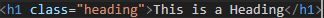
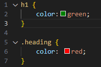
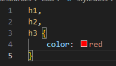

Selectors
Selectors are used to select HTML elemets in order to style them with CSS
| Selector | Description | HTML | CSS |
|---|---|---|---|
| * | Selects all elements | ||
| Type | Selects HTML elements | <p> <h1> <ol> | >p, h1, ol |
| Attribute | Selects an element with an attribute | href, src, alt | [href], [src], [alt] |
| Class | Selects an element with a class attribute | class='heading' | .heading |
| ID | Selects an element with an id attribute | id='title' | #title |
Pseudo-classes
Pseudo-classes are keywords that can be added to any selector. By adding a pseudo-class selectors can be given special states
Pseudo-class will always start with a : e.g., :hover
| P-class | Function | CSS |
|---|---|---|
| :hover | used when a user hovers over an element | link:hover |
| :visited | Used to style elements that have been visted | link:visited |
These are just two example. There are a lot more p-classes.
Specificity
Specificity is the order in which the CSS selectors will display.
If an element is styled with more than one selector then the more specific selector will take effect
 In this example the heading would be red since the class selector is more specific that the type selector
From most specific to least specific is
Id,class,& type
Attribute and p-class are on the same level of specificity as class
Id is the most specific selector and will overwrite any oppsoing class or type declartion
Chaining & Combinators
You can combine multiple selectors when writing a CSS rule. This is called chaining.
An example of chaining typed out in CSS looks like this h1.special. This code would target all <h1> with a class of special
Chaining is used to keep CSS code easy to read and less repetitive. Chaining also increses a selector's specificityFor Example: a selector of p.list would be more specific than a selector of just p
We can also select elements related to other elements using Combinators
We can select a Descendant of an element by purring a space in between the elements. eg, .list li. This will select all the <li> Descendants of the parent with the class of .list
Types of Combinators
| Selector | Example | Function |
|---|---|---|
| tag.class | p.main | Will select all <p> with a class of main |
| .class tag | .main p | Will only select Descendants of .main with the <p> |
Multiple Selectors
We can also make CSS code more readable by putting multiple selectors in one CSS rule
This is done by putting commas in between selectors
In this example all <h1>,<h2>,& <h3> text will be red